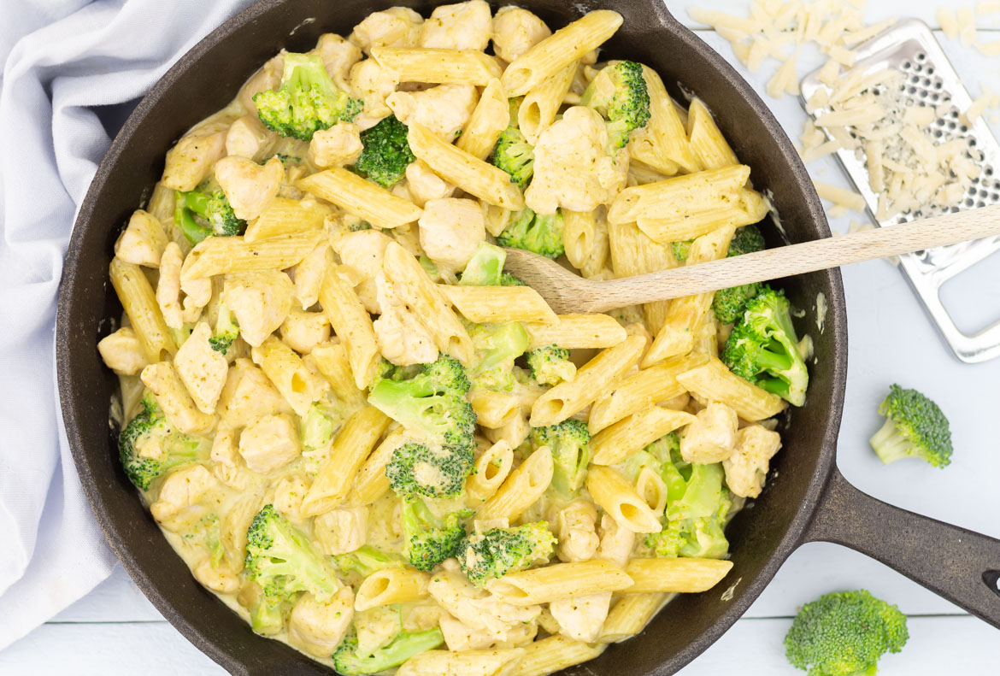

Pasta Pesto

Description
This top-rated pesto pasta recipe, which comes together in just 15 minutes
is the perfect quick and easy weeknight dinner.
You'll find a detailed ingredient list and step-by-step instructions
in the recipe below, but let's go over the basics:
Pasta pesto ingredients
- Pasta: Start with your favorite pasta shape.
- Onion and oil: Cook the onion in olive oil until it’s translucent.
- Pesto: Use store-bought or homemade pesto sauce.
- Seasonings: This pesto pasta is simply seasoned with salt and pepper
- Cheese: Grate your own Parmesan cheese instead of using the pre-shredded stuff.
Instructions
Here is a brief overview of what you can expect when you make this shortcut pesto pasta:
- Boil the pasta in salted water and drain.
- Cook the onion in oil, then stir in the pesto and seasonings.
- Add the pesto mixture to the hot pasta and toss with cheese.